Electric Aircraft Component Sizing
This example models an electric aircraft power network. It can be used to evaluate component sizes with respect to design requirements.
Electric aircraft is an active area of development in the aerospace industry. Simulation can accelerate the process of selecting power network architectures and sizing components. This simulation model enables rapid exploration of the design space and comparison to design criteria, which reduces the number of design iterations and ensures the final design meets system-level requirements.
In this example, aircraft configurations, power networks, and component sizes are all parameterized using MATLAB. You can test a single-seat light aircraft (such as Airbus E-Fan), double-seat light aircraft (such as Pipistrel Alpha Electro), or a custom design. Design parameters, such as battery capacity and payload mass, can be swept over a set of values to determine which combinations will meet flight range requirements. A separate model enables a comparison with a hybrid-electric architecture.
Contents
- Model
- Aircraft Subsystem
- Load Torque Subsystem
- Motor Subsystem
- DC Power Distribution Subsystem
- Simulation Results from Simscape Logging
- Results from Parameter Sweep of Battery Capacities
- Results from Parameter Sweep of Payload Mass
- Results from Parameter Sweep of Battery Capacity and Payload Mass
- Comparison with Hybrid-Electric Architecture
Model
The electric aircraft model includes a battery, two DC networks, and a mechanical model of the aircraft which acts a load on the high voltage DC network. The low voltage DC network includes a set of loads that turn on and off during the flight cycle.
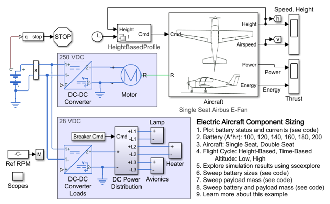Aircraft Subsystem
This subsystem models the aircraft as a load on the motor. This abstract model assumes that the pilot takes the actions necessary to follow the desired flight cycle, set by alpha (angle of attack) and gamma (flight path angle with respect to the earth reference frame). It calculates the required thrust to maintain the lift to follow the flight cycle. The mechanical power required to deliver this thrust is calculated and converted to the load torque on the motor shaft.
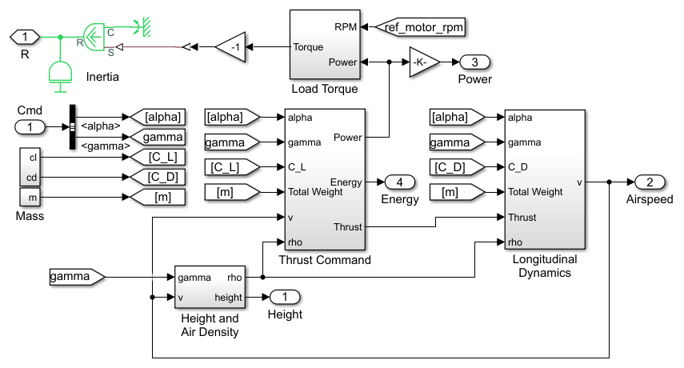Load Torque Subsystem
This subsystem converts the required mechancial power into the load torque on the motor shaft. This abstract model assumes that a specified amount of the motor's mechanical power is converted into thrust. Dividing the required power to maintain thrust by the motor speed results in the load torque on the motor shaft. The motors control system adjusts to maintain the required shaft speed under the varying load.
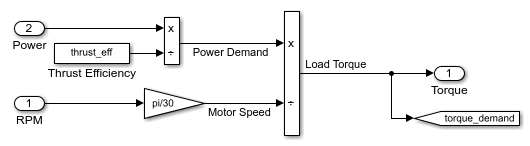Motor Subsystem
This subsystem represents an electric motor and drive electronics operating in torque-control mode, or equivalently current-control mode. The motor's permissible range of torques and speeds is defined by a torque-speed envelope.
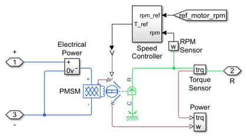DC Power Distribution Subsystem
This subsytem models the breakers that open and close to connect and disconnect loads from the low voltage DC network. The varying conditions affect the power drawn from the network, the range of the aircraft, and the power requirements for the power lines in the aircraft

Simulation Results from Simscape Logging
The plots below show the results of a single simulation. The aircraft starts from a low altitude, climbs to a higher altitude and keeps level flight. The first plot shows the battery states of a pure electrical aircraft during a flight cycle. The second plot shows the current and power levels during simulation.
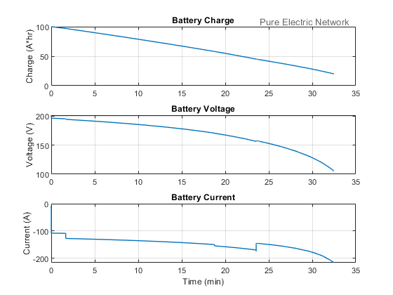 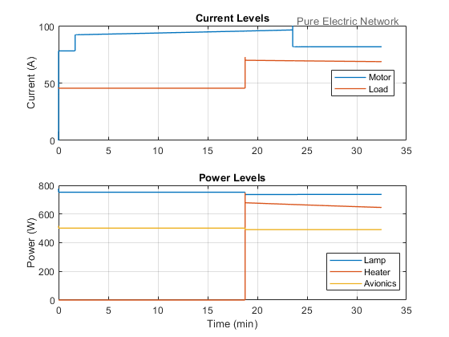Results from Parameter Sweep of Battery Capacities
The plots below show the effect of battery capacity on the flight range and maximum flight time of the aircraft. The relationship between the battery size and the range is not linear because increasing battery capacity also increases the overall weight of the aircraft.
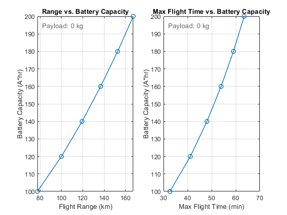Results from Parameter Sweep of Payload Mass
The plots below show the effect of payload mass on flight range and maximum flight time of the aircraft. Varying the payload mass represents adding additional luggage or an additional passenger to the aircraft
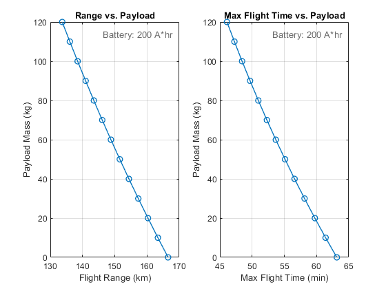Results from Parameter Sweep of Battery Capacity and Payload Mass
The plots below show the effect of varying both the payload mass and battery capacity on flight range. A relatively small percentage of the design space examined will permit flights of over 160 km (100 miles).
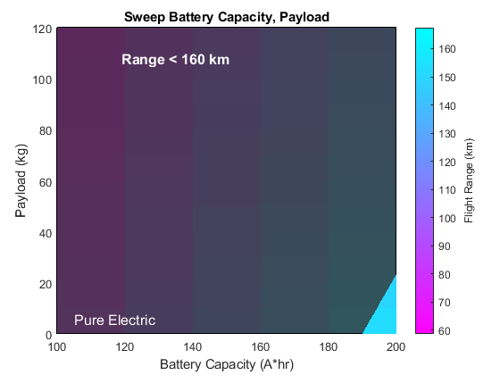Comparison with Hybrid-Electric Architecture
A separate model includes a hybrid-electric architecture. Testing both of these models enables a comparison of the architectures against design requirements.
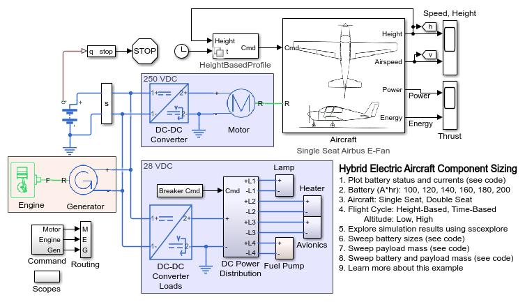 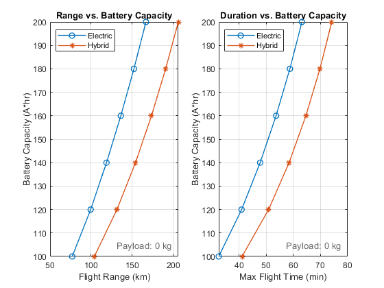 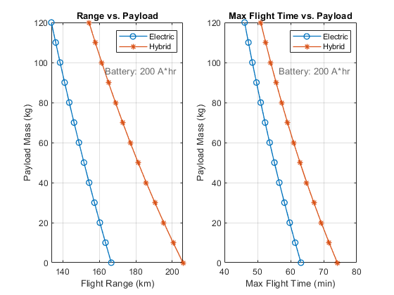 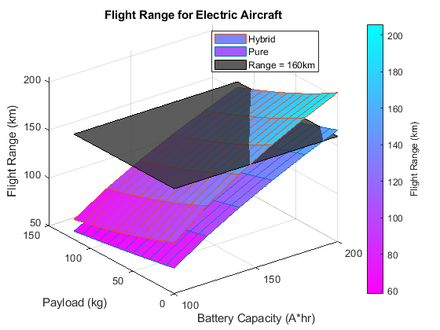 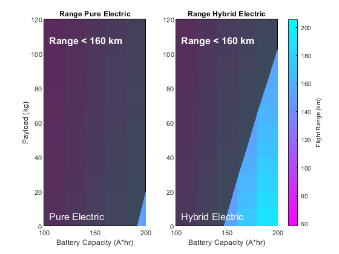